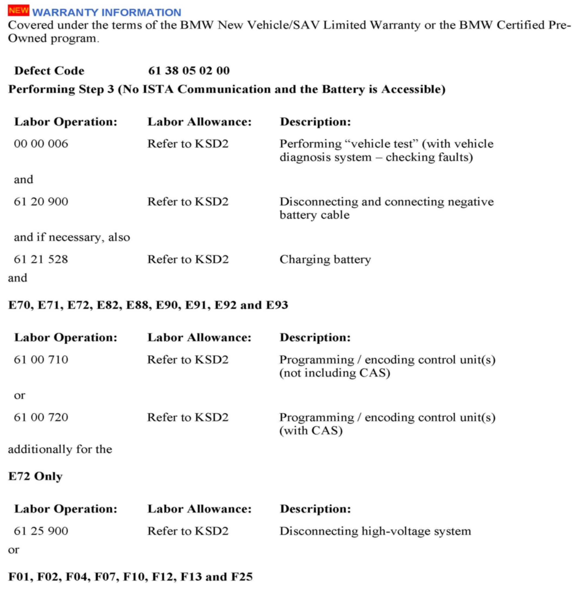
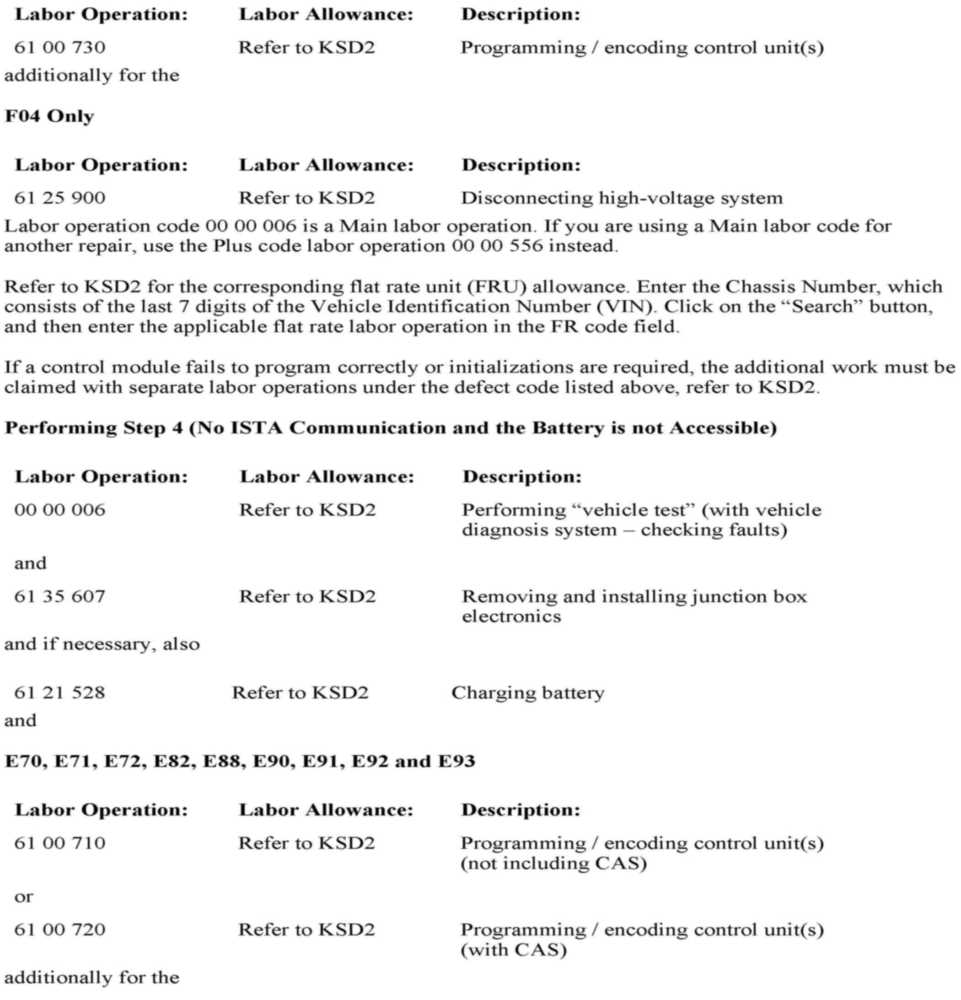
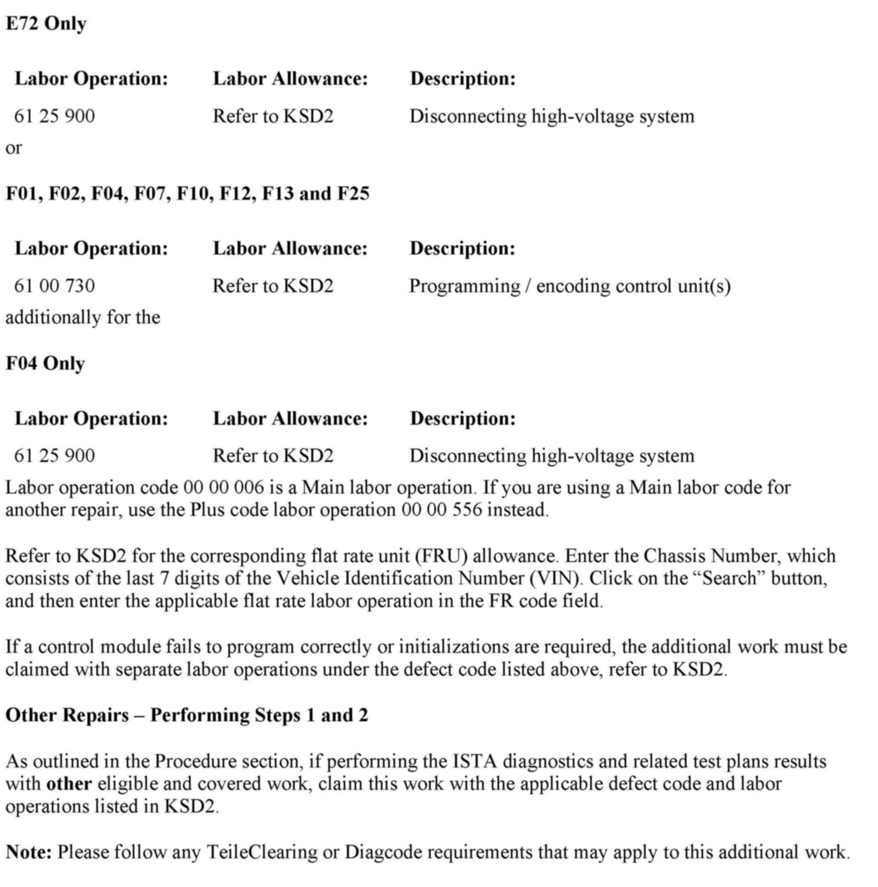

Computer/Controls - 'Electronic Malfunction' Displayed
SI B61 02 12General Electrical Systems
August 2012
Technical Service
This Service Information bulletin supersedes SI B61 02 12 dated January 2012.
SUBJECT
Check Control Message "Electronic Malfunction" Is Displayed Along with Various Electrical Functions Inoperative
MODEL
[NEW]
E70
E71
E72
E82 (Excluding the ActiveE/eDrive1-E82E)
E88
E90
E91
E92
E93
F01
F02
F04
F07
F10
F12
F13
F25
Vehicles produced from September 2009 to July 2012
SITUATION
Various check control messages are displayed, including "Electronic Malfunction" in the instrument cluster and CID (Central Information Display).
One or more of the following functional faults may also be present:
^ ISTA (Integrated Service Technical Application) diagnosis unable to communicate with the vehicle
^ Windshield wipers inoperative or in emergency operation (unable to turn off)
^ Tailgate cannot be opened
^ Central locking system not working
^ Rear power windows are inoperative
CAUSE
JBE (Junction Box Electronics) software error
PROCEDURE
Do not replace any parts.
1. Perform a vehicle test using the latest ISTA (Integrated Service Technical Application) diagnostic software.
Note: When the ISTA system message displays:
"Battery voltage only "XX.XX" V. Please connect charger."
Please note the displayed battery voltage reading in the repair order comments section.
2. If ISTA is able to communicate with the vehicle, complete all relevant test plans related to the fault symptoms.
3. If ISTA will not communicate with the vehicle and the battery is accessible, perform a battery reset for approximately 30 minutes.
4. If ISTA will not communicate with the vehicle and the battery is not accessible in the trunk or cargo area, disconnect the JBE for approximately 30 minutes.
Refer to ISTA Repair Instructions "Removing and installing or replacing junction box electronics".
5. After the battery reset (Step 3) or the JBE remove and reinstall procedure (Step 4), check the operation of all functions that were inoperable and repeat Steps 1 and 2 as necessary.
6. [NEW] Program the vehicle using ISTA/P (Integrated Service Technical Application, programming) 2.47.2 or later.
[NEW] Note that ISTA/P will automatically reprogram and code all programmable control modules that do not have the latest software.
[NEW] For information on programming and coding with ISTA/P, refer to CenterNet / Aftersales Portal / Service / Workshop Technology / Vehicle Programming.



[NEW] WARRANTY INFORMATION